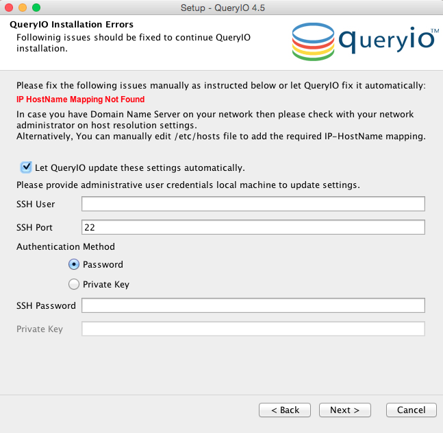

QueryIO: Big Data Analytics - UI Based Installation
In this chapter
This chapter explains how to install QueryIO through user interface. When you
install QueryIO, a number of components are installed, including Hadoop,
databases, libraries, services, agents, etc.
Launch QueryIO installer by double-clicking on the downloaded executable file (e.g. QueryIOv4_5_mac_x64.dmg or QueryIO_v4_5_windows_x64.exe).
A wizard will show up and take you through the installation process.
Introduction
- Please go through the "Introduction" screen. This will brief you about the installation process and details about the QueryIO and its version that will be installed. Click on the "Next" button.
License Agreement
- Please go through the "License Agreement for QueryIO". Accept the agreement to continue installation.
QueryIO Installation
- QueryIO User Registration Details:
- Give details to make first admin account in QueryIO. Remember this username and password for logging in after server starts.
- Select Destination Directory
- Select a folder where you want to install QueryIO. We recommend using the default installation location.
- To specify your own location, click on "Browse..." button and select a location for installation. Click on the "Next" button to proceed further.
- JRE Home: Root folder for JRE on local machine.To specify your own location, click on Check Box
- Configure QueryIO Server Details
- Specify the QueryIO Server port settings. The QueryIO Services requires following ports:
- Startup and Shutdown port: Ports on which QueryIO server will work.
- System port: Ports for QueryIO database.
- We recommend using the default ports provided by QueryIO.
- Click next to proceed to cluster setup.
- Automatic Hadoop Cluster Setup
- This will install hadoop cluster on chosen machine and make all nodes automatically on that machine (on default ports).
- Click yes to proceed with automatic cluster setup.
- Click no to complete setup without setting up cluster (complete cluster setup manually after server starts).
- Filling Hadoop Cluster Setup Form
- Setup Hadoop cluster on local machine : Select this if you want to setup cluster on local machine.
- Setup Hadoop cluster on remote machine : Select this if you want to setup cluster on remote machine.
- SSH Details
- HostName/IP: IP address or name of the host to be added.
- Username: Username of the host.
- Password: Password for account whose username was provided.
- Click on next to install QueryIO
- Setting up properties for continuing installation
- Setup fixes issues like, no mapping found for hostname automatically (if required).
- Please provide machine Admin Username and Password to run commands required to fix these issues.

- If settings are updated successfully, confirmation is shown.
- Installing
- This tab displays progress of the installation.
- Installation Complete
- On successful installation a message "Finished installing QueryIO" is displayed
- Select Start QueryIO Server check box to start QueryIO server automatically after installation is finished. You can start QueryIO server manually also.
- Click on the "Finish" button.
Click here to see how quickly you can setup a cluster using QueryIO, perform data read/write operations and use standard SQL to query your BigData.
Copyright © 2015 QueryIO Corporation. All Rights Reserved.
QueryIO, "Big Data Intelligence" and the QueryIO Logo are trademarks
of QueryIO Corporation. Apache, Hadoop and HDFS are trademarks of The Apache Software Foundation.